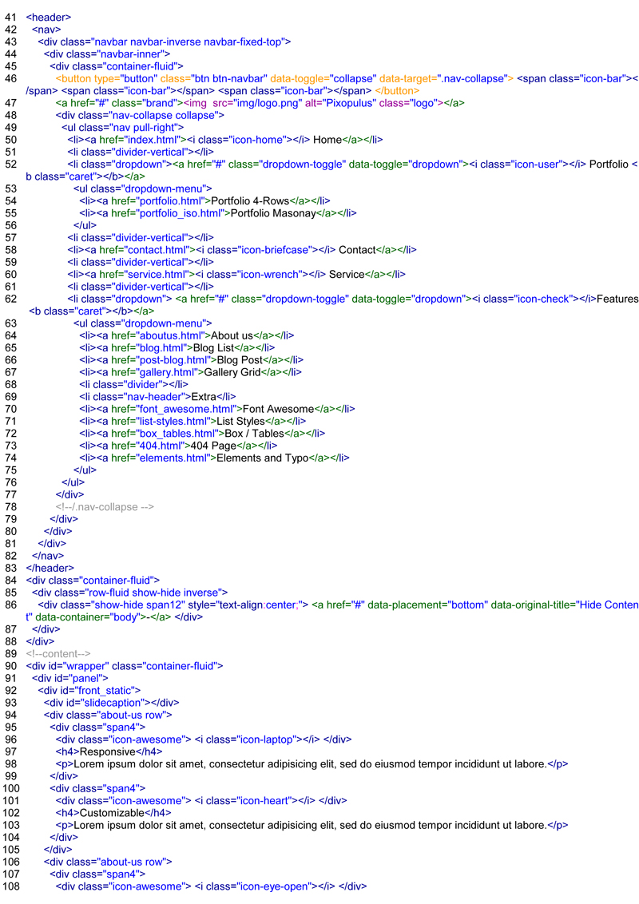
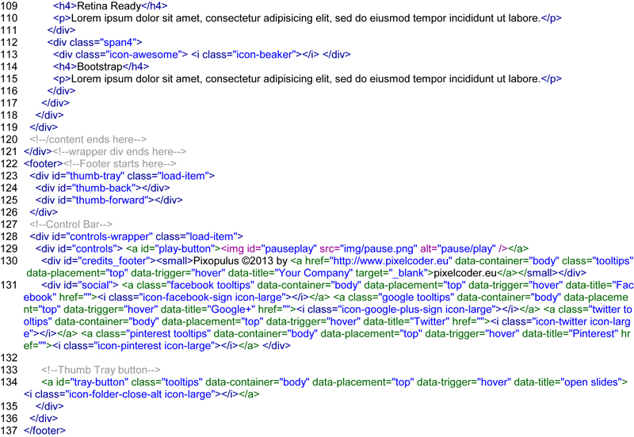
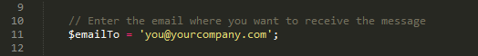
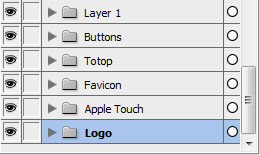
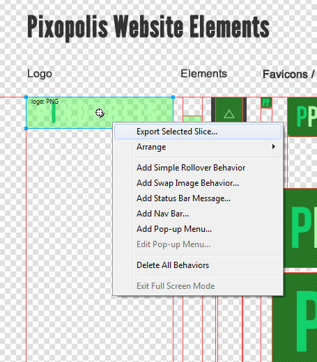

Created: 03/12/2013
By: Lutz Heidbrink
Email: lheidbrink@pixelcoder.eu
Email support within 24h, 7 days a week, for free! If you need small modifications, just leave me a message.
Thank you for purchasing my theme. If you have any questions that are beyond the scope of this help file, please feel free to email via my user page contact form here. Thanks so much!
This theme is a fluid repsonsive layout with maximal 12 columns. Its based on bootstraps famous rock solid grid system. All of the information within the main content area is nested within a div with an id of "page".
Inside the wrapper you find the fixed 12 coloum grid layout. To add a row you just have to add a <div class="row"> followed by a <div class="span1-12">.
So we have here span4 + span8 = the maximum of 12 spans. You can mix it like you desire. The result must be 12.
For further Informations about bootstraps Grid System you can look here: bootstraps Grid System + Examples
In the index.html you see here I used four span elemts <div class="span4"> so its 12.


If you would like to edit the color, font, or style of any elements in one of these columns, you would do the following:
#page .span4 {
color: #someColor;
}
If you find that your new style is not overriding, it is most likely because of a specificity problem. Scroll down in your CSS file and make sure that there isn't a similar style that has more weight.
I.E.
#wrapper #page .span4 {
color: #someColor;
}
So, to ensure that your new styles are applied, make sure that they carry enough "weight" and that there isn't a style lower in the CSS file that is being applied after yours.
I have included 249 Font Icons you are free to use them anywhere on your page.
<i class="icon-check"></i>
They are easy to use just put this line of code where you want a Icon. The Icon adujst the size from the containing element like for example, when you put it inside a <h2> Tag, the Icon automatic increase it's size. You can also controll any behaviour with CSS.
For further informations read here: Font Awesome Manual and some really nice Examples
Aside the boostrap core CSS Files (leave them untouched pease, for further updates) , I'm using three CSS files in this theme. The first one is the main template file custom.css. The second one is for responisve modifactions I made: responsive.css. Last I used a fonts.css file to include the Bebas Neue Font for the headers..You can insert in this file any font you wish.
There are also CSS Files for the Supersized Slidehow and the Colorbox Photo Gallery. You can edit and modify these ones also.
The custom.css contains all of the specific stylings for the page. The file is separated into sections using:
/*Frontpag*/ some code /* Blog Styling*/ some code /* Portfolio Styling */ some code /* Footer Styling */ some code etc, etc.
If you would like to edit a specific section of the site, simply find the appropriate label in the CSS file, and then scroll down until you find the appropriate style that needs to be edited. In Chrome and Firefox you just have to mark an Element and press the right mouse button to inspect any Element on the page.
All Images on the Portfolio 4-row Page have a light border on the top left and bottom right corner, when you want a normal box image for example make your own styling here:
.work {
border-radius: 10px 0 10px 0; (change it to border-radius:0;)
}
Alternativly you could override the styling by putting your extra code on the very bottom of the custom.css file.
#page .work {
your values
}
This example has a higher weight than the original value so it would overwrite the default styling.
This theme imports the following Javascript files.
<script src="js/jquery-1.8.3.min.js"></script>
<script src="js/bootstrap.min.js"></script>
<script src="js/jquery.easing.min.js"></script>
<script src="js/supersized.3.2.7.min.js"></script>
<script src="theme/supersized.shutter.js"></script>
<script src="http://maps.google.com/maps/api/js?sensor=true"></script>
<script src="js/jquery.ui.map.min.js"></script>
<script src="js/jquery.isotope.js"></script>
<script src="js/jquery.colorbox-min.js"></script>
<script src="js/custom.js"></script> <!-- put inside custom.js all your javascript code, you can change the fullscreen slider images here also.-->
<script src="js/jquery.ui.totop.min.js"></script>
Line 33 {image : 'img/slides/slide1.jpg', title : '<h1>Welcome to <span class="cyan">Pixopolis!</span>
</h1><h4>Based on Bootstrap</h4>', thumb : 'img/slides/slide1_thumb.jpg'},
Insert here you slides you can add as many Pictures you wish. Be sure to close any line with a > , < exept the last line.
Line 11 transition : 1, // 0-None, 1-Fade, 2-Slide Top, 3-Slide Right, 4-Slide Bottom, 5-Slide Left, 6-Carousel Right, 7-Carousel LeftHere you can chooes how the Background Pictures are shown on your page.
In addition to the custom script, I implement a few "tried and true" plugins to create the effects.
Pixopolus comes with a full working contact form. Open the sendmail.php and insert your own email Address.

I've included one PNG File with this theme:
The File is full layered:

The PNG comes with slices so if you want change the Logo just open the File and edit your Text, right click on the Slice and export it as an transparent PNG inside the img Folder.

I've used the following images, icons or other files as listed.
Once again, thank you so much for purchasing this theme. As I said at the beginning, I'd be glad to help you if you have any questions relating to this theme. No guarantees, but I'll do my best to assist you within 24/hours max timeframe.
Lutz Heidbrink